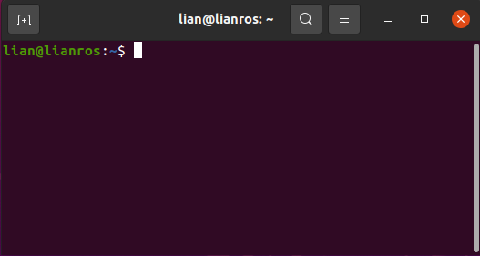

Comandos
Comandos
Introducción
En este apartado se van a muchos de los comandos que se pueden llegar a ejecutar con Linux, desde los más utilizados hasta los más curiosos. En Linux se pueden hacer cosas a través de la interfaz gráfica de usuario, pero se pueden llevar a cabo de una manera más eficaz en la terminal o shell.
¿Qué es la shell?
La shell de Linux es el intérprete de comandos que recibe órdenes del usuario o las que se encuentra en un script y los envía al sistema operativo para procesarlos.
Para abrir una shell hay varias formas de hacerlo, además de en la plataforma en la que éstes:

¿Cómo sacar la shell?
- Ubuntu:

- Ctrl+Alt+T
- Alt+F2 y escriba gnome-terminal en la pequeña ventana flotante.
 - Raspberry:

- Escriba lxterminal.
Tutorial
Guía
Primero, vamos a introducir 2 comandos que son de gran ayuda, ya que proporcionan ayuda en línea sobre otros comandos.
man
Comando que despliega un manual sobre el comando que se desea consultar.
$ man [comando]
--help
Muestra una ayuda rápida de cualquier comnado, mostrando los argumentos y parámetros necesarios.
$ [comando] --help
También la shell introduce la opción de autocompletar con la tabulación, para una mayor rapidez. Linux tiene una gran variedad de paquetes y programas, por lo que existe un instalador llamado apt-get, que se encarga de instalar y actualizar los paquetes de software. Esto debe hacerse desde el superusuario (sudo).
Instalar paquetes
$ sudo apt-get install [nombre paquete]
Actualizar paquetes
$ sudo apt-get update
Eliminar paquetes
$ sudo apt-get remove [nombre paquete]
Buscar paquetes
$ sudo apt-cache search [nombre paquete]
Comandos básicos
pwd
Se utiliza para conocer el directorio en el que te encuentras en ese momento, devuelve un path absoluto, empezando desde la raíz (root). La raíz es la base de un sistema Linux, se denota con (/). El directorio del usuario debe ser algo como "/home/nombreusuario"
ls
Para conocer los ficheros que se encuentran en el directorio en el que te encuentras, escriba ls. Este comando tiene muchas opciones a desplegar, por ejemplo si queremos ver los archivos ocultos Escriba ls -a
cd
Puedes cambiar el directorio en el que te encuentras, usando cd, abreviación de "change directory". También gracias a este comando se puede volver a un directorio anterior, o incluso volver al directorio home.
mkdir
Usa mkdir para crear una carpeta o un directorio con su respectivo nombre.
touch
Si quieres crear un fichero vacío, usa touch y el nombre del fichero.
echo y cat
Devuelve los argumentos escritos después de este comando. Combinándolo con > se puede escribir contenido en un fichero.
Para visualizar el contenido de un fichero con cat se puede hacer. También tiene otras funciones como concatenar ficheros, o mostrar el número de líneas.
mv
Utiliza mv para mover un fichero entre directorios. Además se hace uso de mv para renombrar un fichero.
cp
Usa cp para copiar archivos. Toma dos argumentos: la primera es la dirección del archivo a copiar y la segunda, dónde se quiere copiar.
rm
Usa rm para eliminar ficheros o directorios. Si solo se quiere eliminar el directorio rm -r
Sitios de interés
Si desea conocer más comandos, te dejamos varios sitios webs llenos de información.